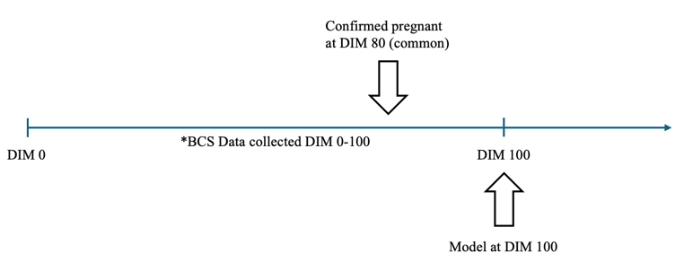
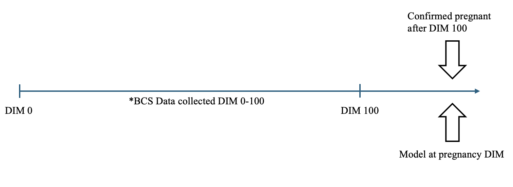
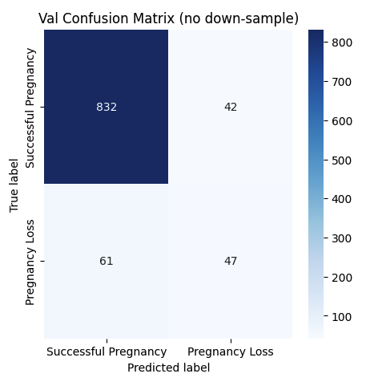
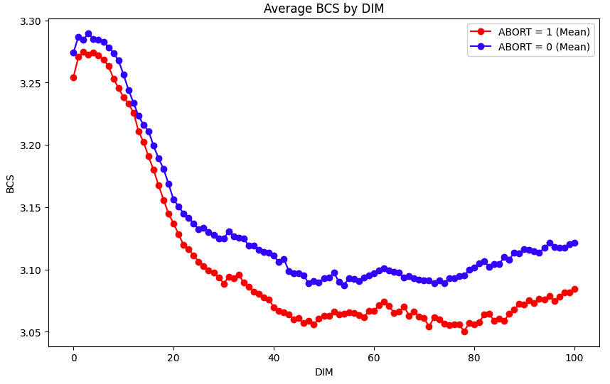
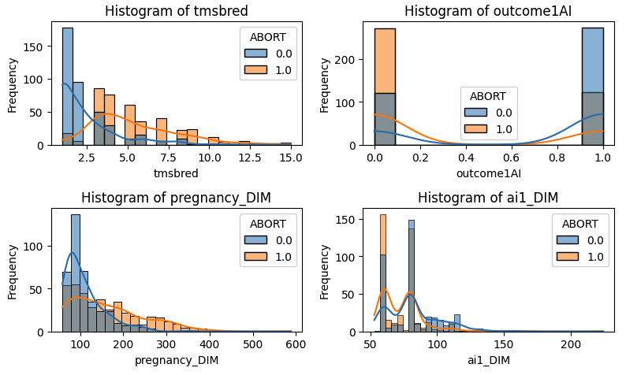
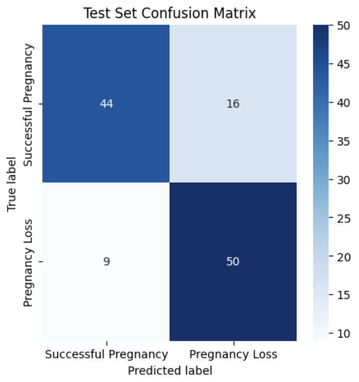

Predicting
Cow Pregnancy Outcomes using Health Data
Sam Herold, Dr.
Pablo Pinedo, Dr. Manriquez Alvarez
https://github.com/SamHero16/CS478FinalProject
Introduction
Animal
Science has seen an influx of data in recent years due to advancements in data
collection techniques and precise livestock farming. In the Department of
Animal Sciences at CSU, Dr. Pablo Pineda and Dr. Manriquez Alvarez collect
large amounts of data on cows. This opens the door for machine learning.
Pregnancy
loss is a common issue in dairy and cattle operations. Dr. Pineda and Dr.
Alvarez research this problem. They collect a high volume of health data on
cows, and want to begin to use machine learning in their work. Specifically,
they want to be able to predict the likelihood of pregnancy loss in their cows.
This paper will detail the creation of a predictive model for cow pregnancy
outcomes. I will begin by outlining the background of cow pregnancy and the available
data. Then I will show my exploration of the dataset, and my strategy for
wrangling and modeling. Finally, I will show results from modeling.
Background
This
data operates in a very specific way. Having some domain knowledge is
important.
Cow
Pregnancy Operations and Data Collections
- After a dairy cow has calved (given
birth), it begins to lactate. This is a very important time and is called the
milking period. The Days in Milk (or DIM) metric begins when the cow gives
birth. For example, at calving, DIM is 0. 100 days after calving, DIM is 100.
Because this milking period is so important, sensor data is collected from cows
at every DIM. This sensor data is called BCS (body condition score). It
essentially represents overall health of the cow. [Pablo Pinedo and Diego
Manriquez, 2022]
- The milking period is also when the
cow once again attempts to become pregnant. First insemination is usually
between DIM 60 and 100. A cow is inseminated as many times as it takes to get
them pregnant (to a certain extent). Data about the number of times
inseminated, DIM inseminated, if they had a successful first insemination or
not, and when they were confirmed pregnant is all available.
- Information about any diseases,
injuries, or ailments that occurred during milking are recorded.
- A cow can become pregnant at any
date (though almost all are before DIM 300).
- A pregnancy loss can happen any
time after a cow is successfully impregnated.
- Data is uploaded after entire
milking period.
Dataset
Introduction
The
raw dataset contains 6524 instances of milking cows who successfully became
pregnant. Below are important features:
- ‘Abort’ column
o
Whether
the cow lost the pregnancy or not (0/1). This is very important and is what we
will be predicting.
- BCS data (by DIM)
o
Gives
health score (BCS) at every DIM up to DIM 150. There is a column for every DIM.
- Artificial Insemination data
o
Data
that has to deal with the insemination of the cow.
o
Examples:
whether the cow had a successful first insemination, how many times it has been
inseminated, what DIM the cow actually got pregnant, etc.
- Disease and Injury data
o
Marks
if a cow had a disease or injury while in milk (one hot encoded).
o
Examples:
pyometra, fever, leg injury, etc.
- Milk Data
o
Average
milk produced in a given period.
o
Examples:
Average milk produced in first month, average milk produced in second month,
etc.
Exploration
and Strategy
A large
part of this project was developing a strategy for modeling. Since pregnancy
can begin and be lost at any DIM, it is unclear how and when during milking to use
the model. If we model at a set DIM, some cows would have already lost the
pregnancy, while others aren’t even confirmed to be pregnant yet.
I
considered many approaches and frameworks for this problem. After deliberation,
I settled on doing binary classification on the ‘Abort’ column at either DIM
100 or pregnancy DIM (the day when the cow is confirmed pregnant), whichever
comes later. Only 3 pregnancy losses came before DIM 100, meaning I should
safely be able to use information up to this date. This mostly applies to the
daily BCS data, which I use up to DIM 100 for every cow. However, some cows
become pregnant after this date (at up to 400 DIM!). Some of the most
predictive features are acquired on the day the cow becomes pregnant, so
modelling before this date is foolish. For this reason, if the cow is confirmed
pregnant at a day later than 100 DIM, we model at that DIM. If the cow is
confirmed pregnant before 100 DIM, wait until 100 DIM to model (we need to fill
BCS data up to DIM 100). During this time, a user can also fill in any injuries
or diseases the cow may have had.

Figure 1. If the pregnancy is confirmed before DIM
100, the model still requires BCS data up to DIM 100. Pregnancy loss almost
never occurs before DIM 100, so we can do this safely. If pregnancy is
confirmed after DIM 100, model at that date (only using BCS data up to DIM 100).
Modeling before a cow is even confirmed pregnant discards information and is
foolish.
Data
Wrangling
-
Remove
observations where the cow died or was sold
-
Remove
redundant/useless/NaN/string columns
- Remove columns that record data
that happened after the model was to be made. For example, I can’t include
milkmonth7 or BCS @ DIM 150, because a lot of cows would have already lost
their pregnancy by then, and I can’t put a NaN into a ML model.
- Making sure there were no diseases
or injuries recorded after the pregnancy loss.
Another
difficult aspect of this project is that the data is imbalanced. Pregnancy loss
only occurs about 7% of the time in the dataset. This makes the data hard to
visualize, and makes model results bias and misleading. After testing, I chose
to down-sample the majority class so there is an equal number of outcomes in
the dataset. Without down-sampling, the model has very bad recall and precision
(Fig 2), because it essentially just picks the majority (no pregnancy loss)
every time. We actually want to be able to predict when the pregnancy losses
are happening, so the data had to be balanced. [Yasmin Sun et al., 2009]

Figure 2. Confusion
matrix for a XGBoost model trained with no down sampling. The model misses over
half of the pregnancy losses.
Final
Dataset
- 790 observations (rows). Each row
is one pregnancy resulting in either loss of pregnancy or no loss of pregnancy.
- 127 features (columns). 100 BCS
features (by DIM). The other 27 mark injuries, diseases, important events, and milking
information.
Data
Exploration
After
examination, the data seemed promising for predicting pregnancy loss. In
particular, the BCS data and breeding information looked particularly
predictive, while the disease, injury and milk information looked less so. All
of these insights were confirmed by Dr. Pinedo, who observes these phenomena in
real life.

Figure
3. Average BCS by DIM, separated by abort column. On average, a cow who had a
pregnancy loss had a worse BCS score at every DIM. This shows that BCS can be
indicative of pregnancy outcomes.

Figure 4. Four features with highest correlation to pregnancy
loss. tmsbred: how many times the cow was artificially inseminated. outcome1AI:
indicates success or failure of the first artificial insemination. pregnancy_DIM:
the DIM the cow was confirmed pregnant. ai1_DIM: DIM of first artificial
insemination.
The things most predictive of pregnancy loss are
related to when and how the cow got pregnant. Pregnancy is more successful when
the pregnancy begins earlier in milking.
Modeling
Setup
This
is a binary classification problem, predicting successful pregnancy or loss of
pregnancy (0/1). I used a 70-15-15 stratified split for train, validation, and
test. ‘Extra test’ refers to the data leftover from down-sampling. All outcomes
in this extra set were successful pregnancies.
|
Set |
Input Shape |
Target Shape |
|
Train |
552 x 127 |
552 x 1 |
|
Validation |
119 x 127 |
119 x 1 |
|
Test |
119 x 127 |
119 x 1 |
|
Extra test |
4818 x 127 |
4818 x 1 |
Training
Per
usual practice, I used different models and parameters to try to maximize
accuracy, recall and precision on the validation set. I believed this task
would require a model who can do feature interactions (for the BCS columns), so
I made sure to focus on random forests and XGBoost. Recall and precision are especially
important metrics here because pregnancy losses are rare and important to catch.
After testing different models, features, transformations, and hyperparameters,
I settled on the following:
- Transformations:
o
Reduce
the 100 BCS columns to their first 50 principal components
o
Fill
NaN’s with column means.
- Features:
o
Include
all features (down from 127 to 79 due to PCA).
- Model:
o
XGBoostClassifier with all default parameters. [Chen
et al., 2016]
Results
The
results for this were generally positive. We were able to have competitive
accuracy with good recall and precision.
|
|
Accuracy |
F1 Score |
Recall |
Precision |
|
Train |
100 % |
N/A |
N/A |
N/A |
|
Validation |
81.5 % |
82 % |
86.7 % |
77.6 % |
|
Test |
79 % |
80 % |
84.7% |
75.8 % |
|
Extra test |
78.2 % |
N/A |
N/A |
N/A |

Figure 5: Confusion
matrix for the test set showing good recall and precision. The model slightly
overpredicts pregnancy loss, lowering precision. However, Dr. Pinedo said this
is okay, as false positives are better than false negatives for this context.
Conclusion
We
conclude that it is possible to predict pregnancy loss in cows using this data with
around 80% accuracy, with good precision and recall. At DIM 100 or pregnancy
DIM (whatever comes later), a user can input information about a cow and with a
good level of confidence, predict if the cow will have a successful pregnancy. This
model and others like it could prove to be a very useful tool in cow operations.
While this dataset is specific to our farm at CSU, this work shows that commonly
collected cow health data can be predictive of pregnancy loss, meaning other
farms could create a similar model using their own data.
Works Cited
Pinedo, P., Manríquez,
D., Azocar, J., Klug, B. R., & De Vries, A.
(2021). Dynamics of automatically generated body condition scores during early
lactation and pregnancy at first artificial insemination of Holstein cows. Journal
of Dairy Science.
Sun, Y., Wong, A. K. C., &
Kamel, M. S. (2009). Classification of imbalanced data: A review. International
Journal of Pattern Recognition and Artificial Intelligence, 23(4), 687–719.
Chen, T., & Guestrin,
C. (2016). XGBoost: A Scalable Tree Boosting System. arXiv:1603.02754.